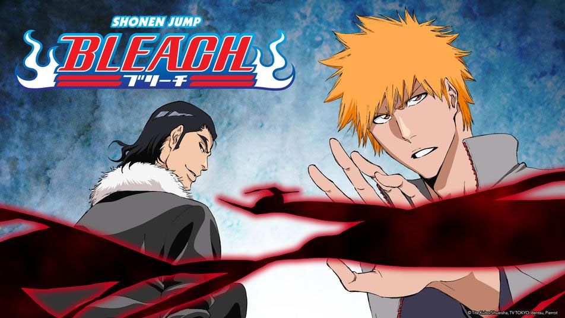

Bleach
 Bleach is a show where the main charcter in just a normal kid that has a power to see ghosts. but one day that abilty coused a hallow (human that died and was not saved) to show up and attack his family. but then a soul reaper (people that slay hollows and help the dead go to the soul socity) showed up to deafeat the hollow but ended up getting hurt witch ended up having to give the main character Ichigo hur soul reaper powers.
Fatcs to know. Ichigo is a Soul Reaper and has many friends that help him. Uryu who is a quincy (humans that obtained the abilty to make spiritual bows). Orihime And Sado/Chad Fullbringers (humans that gained Spiritual Powers to things that they are close to and obtain these by having a hollow interaction at a young age) and many others.